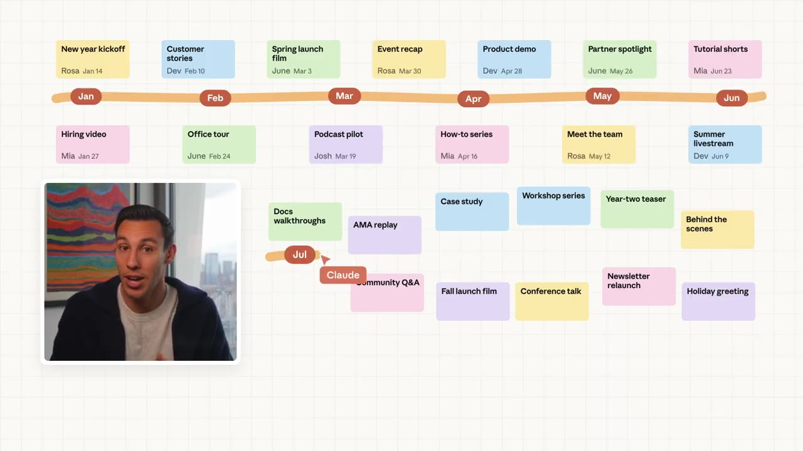
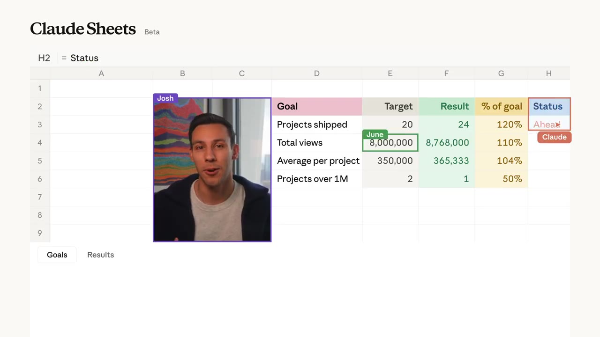
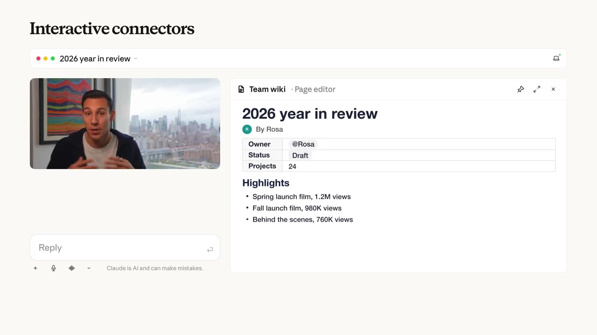

Five brand new ways to use Claude at work
▶ 원본 영상 보기한눈에 보기
- Claude가 화상회의에 참가자로 들어와 회의 중에 노트를 쓰고, 요청하면 화이트보드와 문서까지 만들어 준다 (Claude Meetings).
- 회의 후에는 같은 내용으로 스프레드시트(Claude Sheets)나 대시보드(Claude Data)를 이어서 만들 수 있다.
- 팀이 쓰던 앱을 Claude 안에서 그대로 열어 쓰는 "인터랙티브 커넥터"도 함께 나왔다.
- 모든 기능은 각 사용자가 이미 가진 권한 안에서만 동작하고, Claude가 한 일은 사람이 승인하거나 검토한다.
- 기능마다 제공 요금제와 베타 여부가 다르다.
이런 분께 도움이 됩니다
- 회의록·후속 자료 정리에 시간을 많이 쓰는 팀 리더나 기획자
- Claude의 업무용 도구(Docs, Slides, Design 외 신규 5종)가 무엇을 하는지 빠르게 파악하고 싶은 분
핵심 내용
새로 나온 도구 한눈에 비교
- 영상은 Claude의 기존 업무 도구(Docs, Slides, Design)에 아래 도구들이 더해졌다고 소개한다. (0:32)
- 제공 범위는 영상 설명란 기준이다.
| 도구 | 하는 일 | 제공 범위 |
|---|---|---|
| Claude Meetings | 회의에 참가해 노트 작성, 문서·보드 즉석 제작 | Team·Enterprise 요금제, 베타 |
| Claude Whiteboards | 팀원이 동시에 작업하는 보드 | 모든 유료 요금제, 베타 |
| Claude Sheets | 수식이 든 스프레드시트 생성·공동 편집 | 모든 유료 요금제, 베타 |
| Claude Data | 데이터 웨어하우스 연결 대시보드·스토리 | 모든 유료 요금제 |
| 인터랙티브 커넥터 | 기존 업무 앱을 Claude 안에서 열기 | 모든 요금제 |
💡 핵심은 "회의가 끝나기 전에 결과물이 이미 만들어져 있다"는 것이다.
Claude Meetings: 회의 중에 일이 시작된다
- 캘린더에서 Claude를 추가하면 다른 사람 눈에도 보이는 참가자로 통화에 들어온다. (0:32)
- 대화하는 동안 노트를 쓰고, 누군가 질문하면 글로 답한다. 연결된 도구의 자료는 각 사람의 권한 범위에서만 가져온다.
- 문서나 화이트보드를 요청하면 통화 중에 만들어 주고, 모두 하나의 회의 페이지에서 동시에 볼 수 있다.
- 통화가 끝나면 노트와 보드가 검토만 하면 되는 상태로 남아 있다.
Claude Whiteboards: 흩어진 아이디어를 정리
- 팀원들이 같은 보드에서 동시에 작업한다.
- 영상 예시에서는 한 해 프로젝트를 순서 없이 쏟아내자 Claude가 담당자와 날짜가 붙은 타임라인(1월부터 현재까지)으로 정리했다. (1:05)
- 지저분한 영역은 박스로 드래그해 선택한 뒤 "올해 가장 성과가 좋았던 것은?"처럼 물을 수 있다.
- 회의 후 보드를 공유 가능한 문서로 바꿀 수 있다.

Claude Sheets: 성과표를 수식까지 만들어 준다
- 예시 요청: "올해 목표 성과표 + 결과 탭 하나 더". Claude는 두 탭을 만들고 목표 달성도를 보여 주는 수식까지 넣었다.
- Claude가 팀원과 같은 셀을 동시에 편집하고, 바뀐 셀에는 윤곽선이 표시되어 무엇이 바뀌었는지 바로 보인다.
- 아직 단순한 스프레드시트이고 기능은 더 추가될 예정이며, 언제든 내보내기(export)로 공유할 수 있다.

Claude Data: 큰 숫자는 대시보드로
- 데이터가 웨어하우스에 있을 정도로 크면 Claude Data가 연결한다. 이전 이름의 자막 표기는 "cloud dashboards"로 불분명하다. 베타에서 정식으로 나왔다. (2:22)
- 인증 쿼리: 데이터팀이 "모두가 써야 할 쿼리"를 인증하면, 그 쿼리로 만든 차트에 인증 배지가 붙어 회사 전체가 같은 숫자를 보게 된다.
- 한 해 숫자를 "데이터 스토리"나 전체 회의용 짧은 내레이션 영상으로 만들고, 공유 전에 검토할 수 있다.
- 라이브 공유: 데이터 소스 접근 권한이 없는 사람도 공유받은 대시보드의 최신 숫자를 본다.
- 인증 쿼리와 라이브 공유는 아직 베타다.
인터랙티브 커넥터: 탭 전환 없이 앱을 Claude 안에서
- 슬라이드용 팀 사진, 팀 위키의 회고 페이지 같은 기존 업무 앱을 Claude 안에서 완전한 화면으로 연다. (3:08)
- 앱은 채팅 옆에 열리고, 직접 편집하거나 Claude에게 시킬 수 있다. Claude의 모든 작업은 승인 후 실행된다.
- 다른 업무 앱의 플러그인에는 스킬이 내장되어 있고 일부는 아직 베타다.
- 어떤 방식으로 연결하든 Claude는 각 사람이 이미 가진 권한 안에서만 일한다.

영상 속 하루의 흐름
🔁 회의에서 공유까지
- 회의 참가
- 보드 정리
- 문서화
- 성과표 작성
- 대시보드화
- 앱에서 마무리
- 1회의 참가
캘린더로 Claude를 추가하면 통화에서 노트를 쓴다 (0:32)
- 2보드 정리
브레인덤프를 타임라인으로 정리한다
- 3문서화
통화 후 보드를 공유용 문서로 바꾼다
- 4성과표 작성
Sheets에서 수식이 든 스코어카드를 만든다
- 5대시보드화
큰 데이터는 Claude Data에서 인증 쿼리로 시각화한다
- 6앱에서 마무리
커넥터로 사진·위키 등 앱을 열어 마감한다
기억할 숫자·인용
- 신규 5종: Meetings, Whiteboards, Sheets, Data, 인터랙티브 커넥터
- 기존 도구: Docs, Slides, Design
- 마무리 질문: "Claude를 가장 먼저 추가하고 싶은 회의는?" (댓글 참여 요청)
생각해볼 점
- Claude 공식 채널의 신기능 소개 영상이라 시연은 이상적인 시나리오다. 실제 정리 품질은 직접 써 봐야 알 수 있다.
- Meetings는 Team·Enterprise 베타, Whiteboards·Sheets도 베타라 쓸 수 있는 사람이 제한적이다. 요금제는 설명란 링크(claude.com/resources)에서 확인해야 한다.
- 회의 내용을 AI가 기록하고 외부 도구 자료까지 참조하므로, 참석자 동의와 사내 보안 정책 확인이 필요하다. 이는 영상에 없는 내 의견이다.
바로 해볼 일
- 우리 팀 요금제에서 Meetings·Whiteboards·Sheets를 쓸 수 있는지 claude.com/resources에서 확인하기
- 다음 정기 회의 하나를 골라 Claude를 참가자로 추가할 때 필요한 사전 안내(참석자 동의)를 정리하기